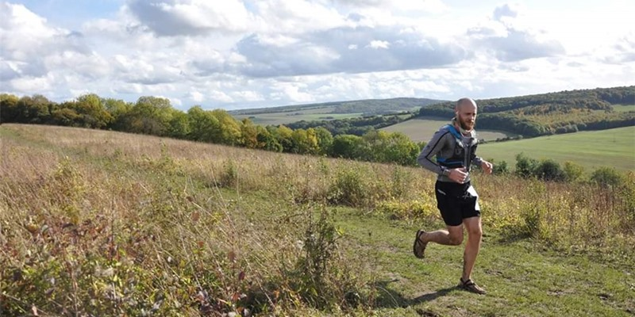

1-2-1 Personal Training
Consultation first, then tailored sessions built around your goals, experience, and schedule.
MarkG PT
Personal Training & Running Coach
I love helping people achieve their goals — from improving fitness, running their first race, to smashing personal bests!
Prices from £35.00 per session.

I’ve been an avid runner since 2012 and have completed 33 marathons and ultras to date and over 200 parkruns.
Other than being a complete running nut, I really enjoy bodyweight exercises and functional movement. I’m very passionate about retaining mobility and flexibility as we get older — I am 45 myself so I understand some of the noises we make getting out of a chair!
If you’re looking to complete your first 5km, 10km, half marathon, marathon or even an ultra I’ve got you covered!
So how does it work? I offer 1-2-1 personal training — we start with a consultation where we can chat and figure out the best path for you.
Consultation first, then tailored sessions built around your goals, experience, and schedule.
Train for your first race or chase a PB — from 5km through to ultra.
Bodyweight, kettlebells and conditioning to build fitness and resilience.
Functional movement to help you move well and stay consistent as you get older.
Food diary analysis and nutrition guidance to support your goals.
Workouts and training plans — whatever you need to get on the path towards your goals.
Ready to start your adventure? Let’s do this!
Prices start from £35.00 per session.
“Excellent personal trainer who will motivate and support you to achieve your goals! I hadn't run for over 3 years and found it difficult to motivate myself to get started again. The best choice I made was to select Mark as my personal trainer. I told Mark the goals I wanted to achieve for running, 5k and 10k and he designed a customised training plan that fit in with the days and hours I was available. Together we worked through the plan and I was able to hit all the goals I wanted, faster than I thought was possible. Mark's experience also helped me to not only run more efficiently but walk more efficiently, which significantly helped with lower back issues I was having. I'd highly recommend Mark for running and strength training.”
“I set Mark a Marathon task of literally getting me from couch to completing a marathon. Mark was brilliant throughout the journey from struggling to run a mile to 26.2 miles in the London Marathon. His guidance, knowledge and support were fantastic. He is reliable and flexible and I’d highly recommend his services.”
“Fantastic trainer, motivating, knowledgeable and organised. I worked with Mark for my first marathon, he provided a customised training plan based on what I wanted to achieve and more importantly to fit in with my other commitments. He provided structure and focus to my training, and supported me throughout the process, wether this was online or running with me during training sessions, he was even there at the finish line to congratulate me! I really enjoyed working with him, and he made the training much more enjoyable, and I will definitely use him again as I look at other events.”
“Recommend, kind and patient trainer. I worked with Mark doing the couch to 5km. Mark really helped motivate me, and show me I really could run, something I never thought was possible. I really hated exercise but wanted to complete a 5km and he got me there. Not only did Mark help me with my running but also with strength training. I'm so much more confident now and feel much more healthy. Highly recommend!”
You! I mostly focus on running, bodyweight exercises and kettlebells, but we can work with any equipment you already own for strength and conditioning sessions.
Want to chat about goals, current training, or an upcoming race? Drop a message and I’ll get back to you.
Email: mark@example.com
(Replace this email with Mark’s preferred contact address.)